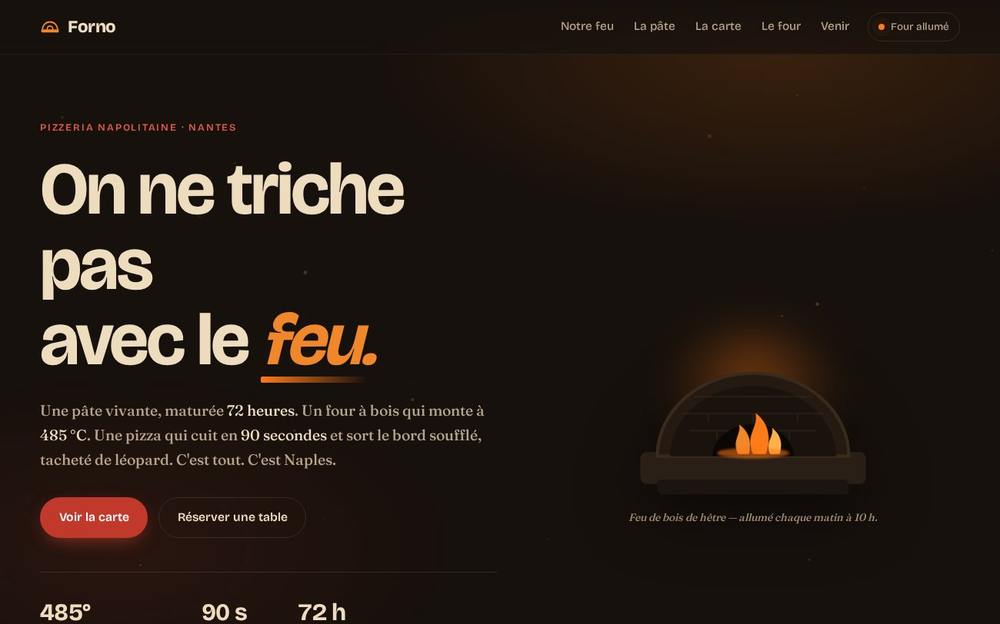

One-pager · restauration
Forno
Une pizzeria napolitaine au feu de bois. Ambiance « braise », four vivant, et une cuisson interactive de 90 secondes où la pizza se tache de léopard sous vos yeux.
- Bricolage + Fraunces
- SVG animé
- Cuisson interactive